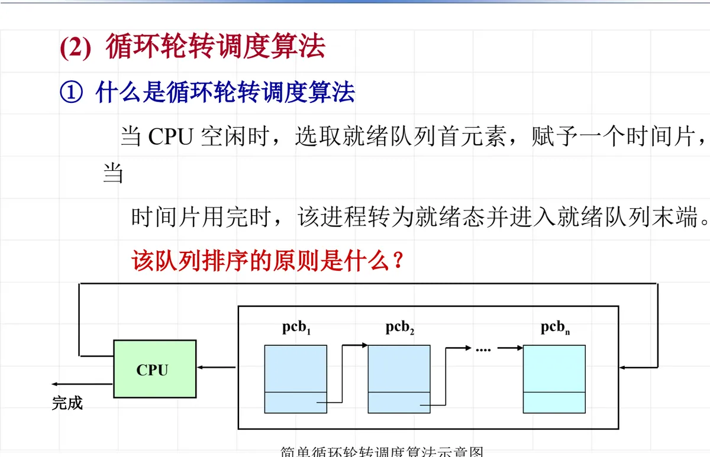

操作系统原理 · 第 6 章 处理机调度
6.6 循环轮转调度算法
6.5 节的进程优先数调度算法是「谁的优先权高谁先上」，它照顾了紧迫的进程，代价是优先权低的进程可能长时间轮不上。这一节换一条思路：所有就绪进程排成一个队列，按到达的先后依次享用处理机，每个进程只连续运行一段固定的时间，用完就回到队尾重新排队——这就是循环轮转调度算法（round robin）。它是分时系统最基础的进程调度算法，本节要讲清三件事：它怎样一圈一圈地轮转、最简单的形式「简单循环轮转调度算法」有哪两条特征，以及绕不开的取舍——时间片该取多大。
1. 什么是循环轮转调度算法
循环轮转调度算法的做法是：把所有的就绪进程排成一个就绪队列；当 CPU 空闲时，调度程序选取就绪队列的首元素投入运行，同时给它规定一段可以连续使用处理机的时间，这段时间称为时间片。进程在分到的时间片内运行；时间片一用完，无论它是否已经做完，都被剥夺处理机、由运行态转为就绪态，并排到就绪队列的末端重新等候。一轮接一轮地做下去，每个进程都按同样的节奏轮流得到处理机，谁也不会被落下太久。
这个过程就是「队首出队 — 在 CPU 上运行一个时间片 — 回到队尾」，图 1 把它画成了一个首尾相接的循环。

图 1 中排成队的就是各个就绪进程的进程控制块 PCB（Process Control Block），标成 pcb1、pcb2、…、pcbn，它们的先后次序代表了进程在队列中的位置。指向 CPU 的箭头表示队首的进程正被选中、投入运行；从 CPU 折回队列末端的箭头表示这个进程的时间片已经用完而任务尚未完成，于是重新排到队尾等待下一轮；另一条指向「完成」的箭头则表示进程运行结束，就此退出队列，不再回到队里来。就绪队列不断地取出队首、又把没做完的进程追加到队尾，循环轮转的名字正来自这个结构。
这里有一个必须交代清楚的问题：这个队列按什么原则排序？就绪队列中的进程是按到达就绪队列的先后次序排列的，也就是先来先服务 FCFS（First Come First Served）：最早进入就绪队列的进程排在队首、最先被选中，新就绪的进程一律排到队尾，要等前面的进程都轮过一遍才轮到自己。所以循环轮转调度在「谁先被选中」这一点上沿用先来先服务，只是给每个被选中的进程加了一条时间片的上限，避免一个进程一次就把处理机占到底。
把它和上一节的优先数调度对照着看，差别很直观：优先数调度每次挑优先权最高的进程，优先权决定次序；循环轮转调度不看优先权，一律排队等轮到自己，每个进程在一轮中得到的机会大致相同。在分时系统中这一点尤其重要——多个用户同时在终端上与系统交互，谁都不该长期占住处理机，也谁都不该长期轮不上。
2. 简单循环轮转调度算法
循环轮转调度算法最简单的形式称为简单循环轮转调度算法，它的做法只有两句话：一个就绪队列，固定时间片。所有就绪进程排在同一个队列里，每次被选中的进程分到的时间片长度都相同，不论它原本是计算型还是 I/O 型、是长进程还是短进程。正因为规则简单，它是后面 6.7 节可变时间片轮转调度与多级时间片循环调度的出发点。
这种算法有两个特征需要记住：
- ① 就绪队列中的所有进程均以 1/n 的速度向前进展，其中 n 为就绪进程数。
- ② 时间片的计算：q = t/n；其中 t 为用户能接受的响应时间，n 为进入系统的进程数目。
特征①说的是公平性的来源：处理机只有一台，n 个就绪进程轮流使用它，平均下来每个进程只拿到全部处理机时间的 1/n，于是所有进程的推进速度大致相同，谁也不会被饿死。特征②则给出了时间片大小的算法：先确定用户能接受的响应时间 t，再按进入系统的进程数目 n 把它平均分下去，得到 q = t/n。这样选出来的时间片保证一个进程从进入就绪队列到被处理机响应，等待时间不超过 t。进程数越多，分到的时间片自然越小，响应时间却仍然被控制在用户能接受的范围内。
不过要区分两种情形。上面 q = t/n 是让时间片随进程数变化的情形；如果系统采用固定时间片，时间片就不能随 n 变来变去，这时改取 q = t/nmax，其中 nmax 是系统允许同时进入的就绪进程的最大数目。按最大可能的进程数来算，得到的时间片一定不会偏大：即使就绪进程数真的达到了 nmax，从进入队列到得到响应也不会超过 t；进程数少于 nmax 时，响应反而更快。这是把「时间片固定」和「响应时间可接受」这两个要求折中的办法。
由于该算法简单易于实现，且系统开销较小，早期的分时操作系统和目前一些应用系统中广泛采用了这种调度算法。
3. 时间片的选取
简单循环轮转调度算法的成败几乎都压在时间片这一个参数上，而时间片无论取大还是取小，都有各自的代价。
时间片取值太小，切换就会频繁：每运行一小会儿就要停下来换成另一个进程，而进程切换本身要做保存现场、恢复现场等工作，是要花时间的。时间片小到一定程度，进程切换的时间就不可忽略，甚至和处理机真正用于运行进程的时间相当，系统开销显著增大，处理机的有效利用率随之下降。所以从系统效率来看，时间片取大一点好。
时间片取值较大，响应速度就会放慢：时间片越大，一个进程一次占住处理机的时间越长，轮到下一个进程的等待就越久。随着就绪队列里进程数目增加，轮转一次的总时间增大，排在队尾的进程要等更久才能被处理机响应，对进程的响应速度放慢了，分时系统最看重的交互感受也就变差。
两个方向都不能走极端：时间片太小伤在系统效率，太大伤在响应时间，只能在两者之间折中——在保证响应时间能让用户接受的前提下，把时间片取得尽量大一些。这个矛盾正是后面两节要处理的：6.7 节的可变时间片轮转调度让时间片随系统中进程数多少而变，进程少时把时间片调大以减少系统开销；6.8 节则干脆不再用一个统一的时间片，而是给不同类型的就绪队列分配长短不同的时间片。
本节小结
- 循环轮转调度算法的规则是：CPU 空闲时选取就绪队列队首的进程运行，赋予它一个时间片；时间片用完，进程由运行态转为就绪态，排到就绪队列末端。就绪队列由此形成「队首出队 — 运行一个时间片 — 回到队尾」的循环，运行结束的进程退出队列。
- 就绪队列按进程到达就绪队列的先后次序排列，即先来先服务 FCFS；与 6.5 节的优先数调度不同，这里不看优先权，每个进程在一轮中得到的机会大致相同，因此在分时系统中格外适用。
- 简单循环轮转调度算法只有一个就绪队列、时间片固定，两个特征是：就绪队列中所有进程均以 1/n 的速度向前进展（n 为就绪进程数）；时间片 q = t/n，t 为用户能接受的响应时间，n 为进入系统的进程数目，若采用固定时间片则取 q = t/nmax。它简单易于实现、系统开销较小，早期的分时操作系统和目前一些应用系统广泛采用。
- 时间片的选取必须折中：取小了切换频繁、进程切换的时间不可忽略、开销显著增大，从系统效率看应取大一点；取大了则随着就绪队列中进程数增加、轮转一次的总时间增大，对进程的响应速度放慢。结论是在保证响应时间可接受的前提下尽量取大。
- 循环轮转调度算法是分时系统的基础算法，6.7 节将讲它的两种发展——可变时间片轮转调度与多级时间片循环调度，6.8 节进一步把时间片与优先级结合起来使用。